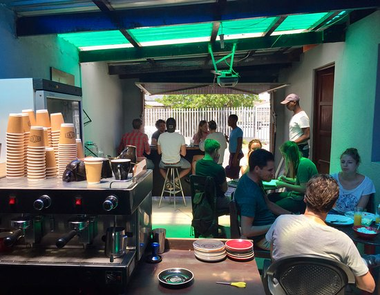

A Coffee Shop for Social Thought and Integration in Khayelitsha All kinds of colours, cultures and creatives surface at Sikis Coffee Café in Khayelitsha. Models stroll in to meet with their photographers, comedians converse over a cuppa about their next performance while white faces pop up occasionally like white spots on a domino. Siki, the founder and owner, started his coffee shop almost two years ago in an attempt to bring coffee culture to Khayelitsha. He opened his coffee shop in the garage of his mother’s house, after working many years for Vida in both Cape Town and London. He invested everything he had into it and expected a great reception from the start. This never happened, after opening Siki spent many lonely days, just watching people just walk by and wave. As time went on, Khayelitsha began to develop and so did its eco-system. The creative scene began to grow and Sikis soon became the obvious place to have meetings. Siki with his vast knowledge of coffee, began explaining and educating people on Coffee, introducing them to the Mocha before the move to more bitter coffees. His local audience began to grow, with most of the locals chatting about social consciousness, art and about how they can expand their businesses. Tourists, both local and foreign, also started rolling in to get a taste of the township. Siki’s coffees come beautifully presented in artistic cups ranging in shapes, colours and sizes. The coffee was beautifully presented with a latte leaf lying above the blissful blackness below. The micro-foam felt as if it could sit on top for hours, so much so that I felt it could used be for insulation. The taste was tender on the tongue, loud on the lips and maintained composure for a while, ensuring the caffeine kicks in. The coffee is bitter and real smooth both at the same time, rolling off the tongue and down towards the belly as if the coffee were Jonah being swallowed by a whale. Siki has his own special blend which is made up of 70% Speciality beans and 30% Arabica beans, all African and all local in an attempt to grow the economy of Africa. A Flat White will set you back R18. There’s a special coffee on the menu though, it’s called a Power Special and if it’s hot and you’re in the mood to meet your mojo, give it a go and see if it’ll make you go “wow” or “no”. The food is simple yet delicious. Toasted sandwiches are on offer for R20 a pop and surprisingly, there are some vegetarian options too. If you’re not down for a full sandwich, there are muffins for R8 or cookies for R2. That’s about it hey but in the future they are looking to upgrade and extend the menu further. The aesthetics are mix of browns, books, benches and blokes interacting as if they all had a prior connection. It’s a backyard special with the toilet having no seat or light but it’s a work under progress and Siki recognizes this. He’s just trying to create something, saying, “Nothing great was created in one go, it’s all about the process.” Sound in the background mixes between the smooth jazz, kwaito and blues that is played in order to ease the heart and further inspire the creativity of Khayelitsha. Siki is still small and growing but his determination and vision are what has got him to where he is today. He’s for sure one of the best baristas in Cape Town and is always down to have an awe-inspiring chat. If you’re on your way from Cape Town to Stellenbosch (or anywhere else for that matter), make sure to stop at Sikis Coffee Café along the way located 7 Ntaba Street, Village 1 South in Khayelitsha. Keen to try some of SIKIS beans? 😀 Check his beans out on the Ground Culture Store for Small Business. Here’s a link to SIKIS coffee if you want to buy it irectly.
“Coffeeology: Espresso yourself. So many blends, so little time. Take life one sip at a time, and stay grounded. Better latte than never. Take time to smell the cover.”.
| Monday | 08:00am to 16:00 pm |
| Tuesday | 08:00am to 16:00 pm |
| Wednesday | 08:00am to 16:00 pm |
| Thursday | 08:00am to 16:00 pm |
| Friday | 08:00am to 16:00 pm |
| Saturday | 08:00am - 15:00pm |
| Sunday | Closed |